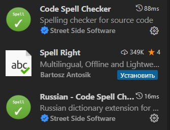
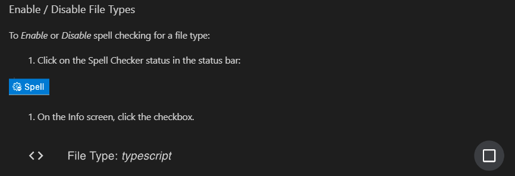
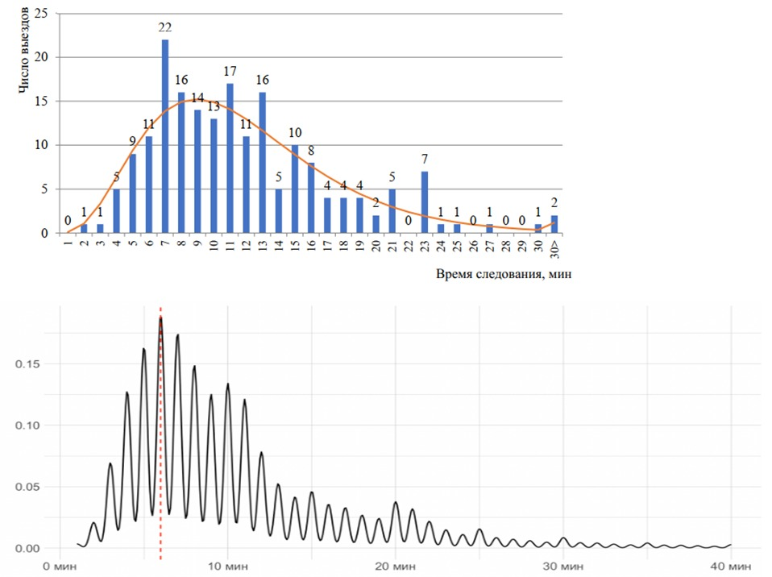
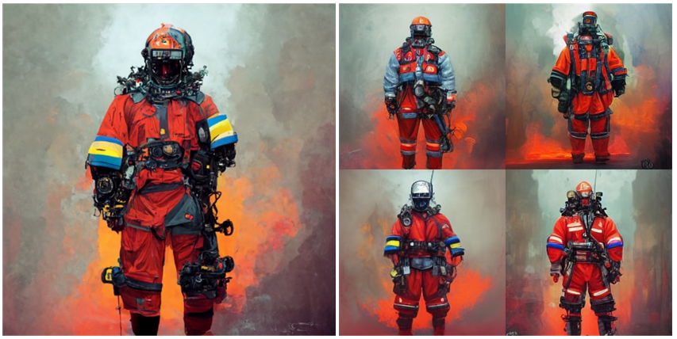
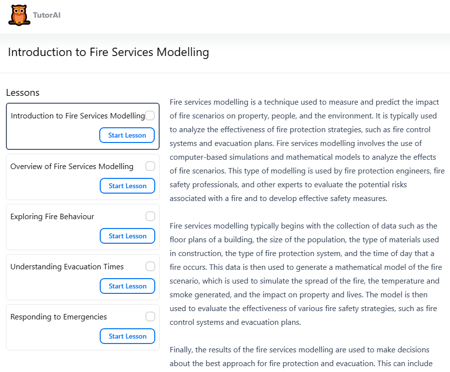

7 февраля 2023
Ежедневный отчет
Обстановка
7 февраля 2023, вторник.
Проверка орфографии в VSC
Разобрался с настройками проверки русской орфографии в Visual Studio Code.
Использую расширение Code Spell Checker и Russian - Code Spell Checker.

Для включения проверки орфографии в файлах .qmd следует использовать команду Spell в нижней правой части экрана и в появившемся окне включить галочку напротив типа файла.

Выбирать следует использование проверки для Workspace.
Статья по статистике
Закончил свою часть работы над статьей по статистике скоростей следования пожарных подразделений в РФ. Интересно, что результат во многом перекликается и подтверждается диссертацией Сибирякова (АГПС), в которой анализ скоростей проводился на основе данных полученных при помощи модулей GPS, т.е. иным способом нежели статистические данные.

Доклад к выступлению на завтра
Написал основную часть доклада к выступлению на дне ученых.

Технологии искусственного интеллекта: настоящее и будущее:
Речь пойдет о таких передовых технологиях искусственного интеллекта как ChatGPT и Midjorney и о том, как такие системы могут быть применены в пожарной охране.
Будет рассказано о том какой путь прошли технологии искусственного интеллекта, на каком этапе развития они находятся сейчас и куда двигаются.
Отдельный упор будет сделан на применении технологий ИИ в сфере техносферной безопасности.
Bluewillow
Разобрался с сервисом Bluewillow – аналогом Midjorney.

Работа с Merlin
Запрос к Merlin: write report about chatGPT with references
Ответ:
A report on ChatGPT should include an overview of the company, its products and services, its customer base, its competitive advantages, and its financial performance. Additionally, the report should include references to relevant sources such as industry reports, news articles, press releases, and financial documents.
Эксперименты с TutorAI
TutorAI – система автоматической генерации обучающего контента построенная с помощью AI. Вопрос создания качественного контента спорный, но вот что она выдала в ответ на запрос Fire Service Modelling:
